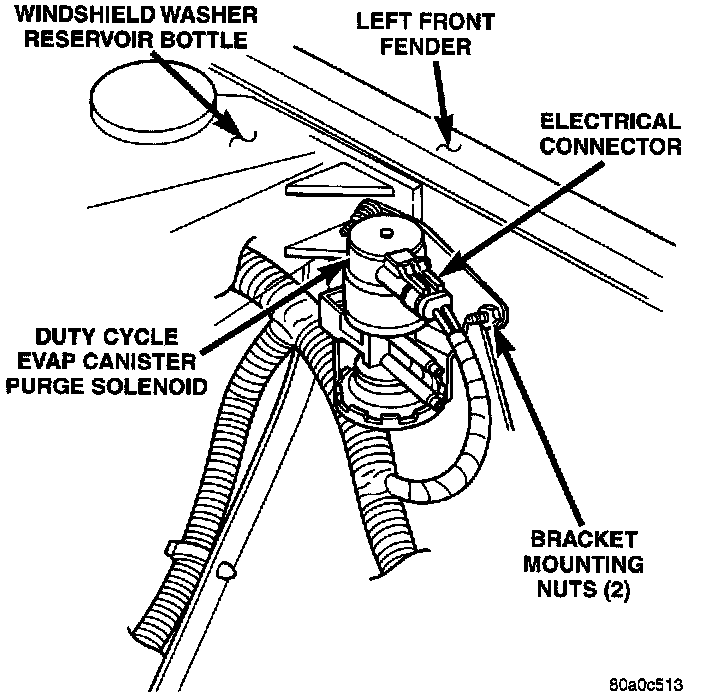

Canister Purge Solenoid: Description and Operation
DUTY CYCLE EVAP CANISTER PURGE SOLENOIDAll engines are equipped with a duty cycle EVAP canister purge solenoid. The solenoid regulates the rate of vapor flow from the EVAP canister to the intake manifold. The Powertrain Control Module (PCM) operates the solenoid.
During the cold start warm-up period and the hot start time delay, the PCM does not energize the solenoid. When de-energized, no vapors are purged. The PCM de-energizes the solenoid during open loop operation.
The engine enters closed loop operation after it reaches a specified temperature and the time delay ends. During closed loop operation, the PCM cycles (energizes and de-energizes) the solenoid 5 or 10 times per second, depending upon operating conditions. The PCM varies the vapor flow rate by changing solenoid pulse width. Pulse width is the amount of time that the solenoid is energized. The PCM adjusts solenoid pulse width based on engine operating condition.
Fig. 3 EVAP Duty Cycle Purge Solenoid Location:

The solenoid attaches to a bracket located on the left/inner fender (Fig. 3).
CIRCUIT OPERATION
When the ignition switch is in the START or RUN position, it connects circuit A1 from fuse 8 in the Power Distribution Center (PDC) to circuit A21. Circuit A21 powers circuit F99 through PDC fuse 18. Circuit F99 powers to the Duty Cycle EVAP/Purge solenoid.
The Powertrain Control Module (PCM) provides the ground path for the solenoid on circuit K52. Circuit K52 connects to cavity C20 of the PCM.